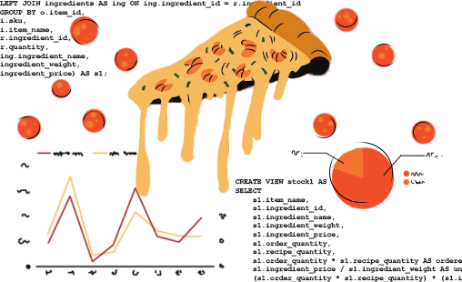
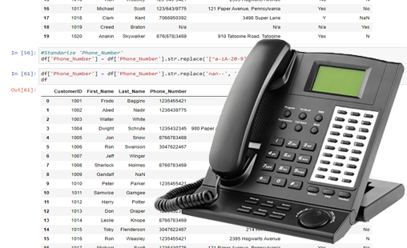

In this project I leveraged data in SQL to refine raw housing data, transforming it into a polished dataset optimized for in-depth analysis. Through meticulous data cleaning and strategic restructuring, I sculpted a reliable foundation for uncovering valuable trends and insights within the housing market.
Delved into raw COVID vaccines and deaths data, harnessing SQL's potency to unveil intricate insights. With methodical exploration and transformation, I unearthed nuanced connections, critical correlations, and pivotal patterns, illuminating the pandemic's far-reaching impact.

Embarking on a ground-up endeavor, this project revolves around crafting a comprehensive DataBase infraestructure for a small delivery business. Relevant elements in this project are the meticulous creation of the DataBase, forging robust relationships among tables for a cohesive framework and extensive data exploration to fuel subsequent analysis for generating insightful visualizations.
Harnessed Excel's dynamic suite of tools, I meticulously cleaned, and explored raw bike sales data.These robust functionalities revealed intricate patterns, focusing on customer behavior for actionable insights, driving informed analyses of market trends and sales dynamics.Excel's transformative potential showcased in extracting profound insights from raw data empowers strategic business decisions.
Focused on individuals in the data tech field, this comprehensive study aimed to unveil insights offering a profound understanding of team diversity and preferences. This exploration highlights tools, preferences, and the multifaceted landscape of roles within the data tech community.Visualization crafted with Power BI, served as a compass, guiding the understanding of participant satisfaction, diversity, and preferences within the dynamic data tech industry.

Project centered on the meticulous cleansing of raw customer call listings using Pandas. The process aimed to streamline company operations by filtering and organizing data, ensuring contact with individuals the company was authorized and equipped to call.Through the adept utilization of Pandas, I facilitated an efficient workflow by refining the dataset, enabling precise targeting and adherence to permissions. This data refinement process optimized the company's outreach strategies, ensuring compliance and effectiveness in their communication endeavors.
Python based automation program efficiently retrieves, processes, and analyzes cryptocurrency data sourced from the CoinMarketCap API. This script aims to offer valuable insights into the dynamic realm of cryptocurrency by automating the essential data collection and analysis processes.